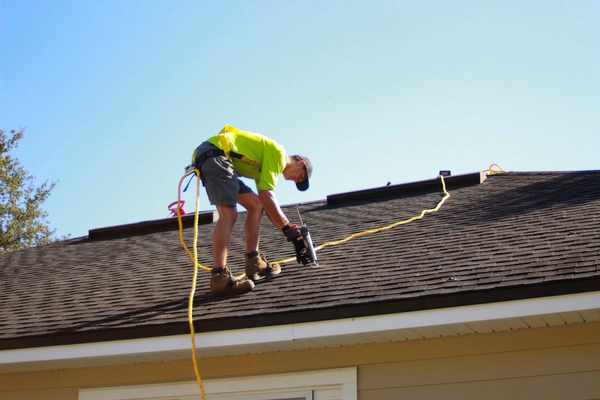
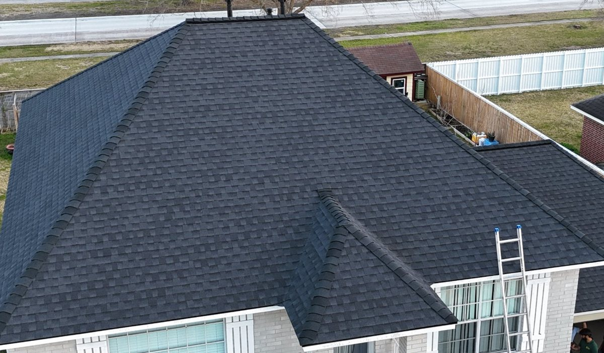
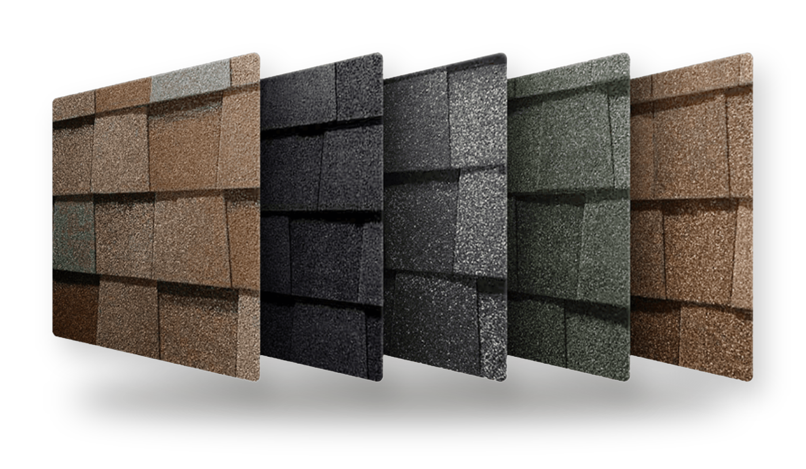

Asphalt Roofing Company In Greater Houston
Asphalt shingles are the most popular roofing choice for Houston homes: affordable, durable and built to handle heat, heavy rain and high winds. We install trusted GAF and Owens Corning shingles in a wide range of styles and colors.
Get A Roofing Estimate Roof FinancingAsphalt Roof Repair In Greater Houston
Cracked, curling or missing shingles, small leaks and worn flashing can usually be repaired without replacing your whole roof. We match your existing shingles as closely as possible and fix the problem before it spreads.
Get A Roof Repair Quote Learn About Roof Repair →
Asphalt Roof Replacement In Greater Houston
When your roof is near the end of its life or storm damage is too widespread to patch, a full replacement is the smarter investment. We tear off the old roof, inspect and repair the decking, and install a complete GAF or Owens Corning shingle system, backed by our 50-year workmanship warranty.
Get A Roof Replacement Quote See Roof Replacement Prices →
Types Of Asphalt Shingles
Asphalt Shingle Colors
Your shingle color shapes how the roof works with your siding, trim, brick and other exterior finishes. Color options vary by manufacturer and product line, but popular choices include dark neutrals, warm earth tones and blended grays.

Benefits Of Asphalt Shingle Roofing

Financing For Asphalt Roofing
Easy Application Process
Get the new asphalt roof your home needs now with easy financing options and affordable monthly payments.
Roof Financing Options